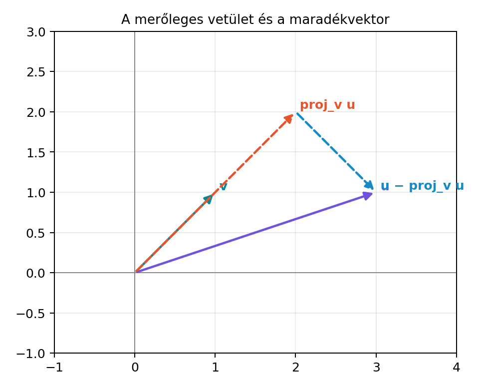

21.1.1 Motiváció: amikor egyetlen
szám már nem elég
A mindennapi geometriában egy pont helye a síkon vagy a térben két,
illetve három számmal adható meg. A fizikában azonban gyakran nem elég
egy pont: kell egy irány és egy
nagyság is. Egy erő, egy sebesség, egy elmozdulás vagy
egy forgatónyomaték mind ilyen mennyiség. A kérdés, amely ezt az
alfejezetet nyitja, a következő: ha egy ládát ferdén húzunk, az erőnek
csak egy része végez hasznos munkát a vízszintes elmozdulás irányában;
hogyan számítható ki ez a „hatékony rész”? Ha egy csavarkulcsra ferde
irányból hat az erő, mekkora forgató hatást fejt ki? És ha egy napelem
nem merőleges a napsugarakra, mennyi teljesítményt veszítünk? Mindhárom
kérdés a vektorok két alapvető szorzatára vezet: a skaláris
szorzatra és a vektoriális szorzatra.
Ez az alfejezet felfrissíti a középiskolai vektorfogalmat, és
rendszerbe foglalja azokat a műveleteket, amelyekre a többváltozós
analízis, a vektoranalízis és a lineáris algebra folyamatosan építeni
fog.
21.1.2 Szemléletes kép: irányított
szakaszok és vetületek
Egy vektort legegyszerűbben irányított szakaszként képzelhetünk el,
amelynek van hossza és iránya. A síkban például a
vektor azt jelenti, hogy az origóból a
pontba mutat. Ha egy másik vektorra vetítjük, a vetület az a vektor,
amely a másik irányába esik, és amelyből a merőleges maradék
hozzáadásával az eredeti vektort visszakapjuk.

A merőleges vetület és a maradékvektor -
Az u = (3,1) vektor felbontása a v = (1,1) irányú vetületre és a v-re
merőleges komponensre. A számított vetület: (2,2) = 2·v, a merőleges
komponens: (1,−1). A koordináták számított, szemléltető
értékek.
Az ábrán a folytonos
vektor a
irányú
vetület és a szaggatott,
-re
merőleges
maradék összege; a vetület tehát
skalárszorosa, nem maga
.
A skaláris szorzat éppen arra való, hogy ezt a felbontást számolás
nélkül, képlettel is elvégezhessük.
21.1.3 Vektorok, hossz és
egységvektor
Definíció. Az
tér egy eleme egy rendezett
-es:
.
A koordináták valós számok. Az
elemei síkvektorok, az
elemei térvektorok. Két vektor összegét és skalárral való szorzatát
koordinátánként értelmezzük:
Definíció. A
vektor hossza (normája, abszolút értéke; más könyvek
dupla függőleges vonallal jelölik a normát):
A hossz mindig nemnegatív, és
pontosan akkor, ha
.
Ha
,
akkor a
vektort egységvektornak nevezzük; hossza
,
és
irányába mutat.
Példa. Legyen
.
Ekkor
tehát az egységvektor
.
Ellenőrzés:
.
21.1.4 A skaláris szorzat és a
szög
Definíció. Az
és
vektorok skaláris szorzata (dot product):
Az eredmény szám, nem vektor. A skaláris szorzat
lineáris mindkét változójában:
és szimmetrikus:
.
Továbbá
.
A skaláris szorzat geometriai tartalmát a következő tétel adja.
Tétel (Cauchy–Schwarz-egyenlőtlenség). Minden
esetén
Egyenlőség pontosan akkor áll fenn, ha a két vektor párhuzamos, azaz
az egyik a másik skalárszorosa.
Bizonyítás. Ha
,
akkor mindkét oldal
,
az állítás igaz. Legyen most
.
Tekintsük a
valós függvényt. A norma definíciója és a skaláris szorzat
linearitása szerint:
Mivel egy hossz négyzete soha nem negatív,
minden
-re.
Ezért a
-ben
másodfokú
polinom diszkriminánsa nem pozitív:
Átrendezve
,
és mivel mindkét oldal nemnegatív, négyzetgyökvonással kapjuk a kívánt
egyenlőtlenséget. Az egyenlőség esete akkor áll fenn, ha a diszkrimináns
nulla, vagyis az
-nek
egyetlen gyöke van, ami azt jelenti, hogy valamely
-ra
.
∎
A Cauchy–Schwarz-egyenlőtlenségből következik, hogy ha
és
,
akkor
Ezért egyértelműen létezik egy
szög, amelyre
Ezt a
szöget nevezzük a két vektor hajlásszögének. Azt
mondjuk, hogy
és
merőlegesek (ortogonálisak), ha
.
A nullvektor minden vektorra merőleges.
Példa. Legyen
és
.
Ekkor
tehát a két vektor merőleges. Hosszuk
,
,
így a hajlásszög koszinusza
,
azaz
.
21.1.5 Merőleges vetület
Az alábbi ábra a
vektor mellett három különböző
vektort mutat: hegyesszögnél a vetület
irányú, derékszögnél nulla, tompaszögnél ellentétes irányú, és mindhárom
esetben a paralelogramma területe
.
Statikus változat (mint a PDF-ben)
Vetület és paralelogramma-terület a szög függvényében
(;
,
,
)
Definíció. Legyen
.
Az
vektor merőleges vetülete a
irányára:
A vetület párhuzamos
-vel.
A
vektor merőleges
-re,
és fennáll az
felbontás. Ez a vektorok merőleges komponensekre bontásának
alapképlete.
Levezetés. Azt keressük, hogy a
irányú
vektorok közül melyik van úgy, hogy a maradék
merőleges legyen
-re.
A merőlegesség feltétele:
azaz
Ebből
.
∎
Példa. Az ábrán szereplő
és
esetén
és a merőleges komponens:
Valóban
.
A skalár itt
,
a vetület tehát kétszer olyan hosszú, mint
.
21.1.6 A vektoriális szorzat
A skaláris szorzat csak a hosszakat és a bezárt szöget használja, az
eredménye szám. A térben azonban szükség van egy olyan műveletre is,
amely két vektorból egy mindkettőre merőleges vektort állít elő, és
amelynek hossza a két vektor által kifeszített paralelogramma területét
adja. Ez a vektoriális szorzat (cross product), amely
csak
-ban
értelmezett.
Definíció. Az
és
vektorok vektoriális szorzata:
ahol
,
,
a koordinátatengelyek egységvektorai. A determinánst az első sora
szerint kifejtve:
Tulajdonságok. A vektoriális szorzat
antikommutatív:
,
mindkét változójában lineáris:
,
merőleges mindkét tényezőjére:
és
.
A merőlegesség a definícióból számolással ellenőrizhető, például:
mert minden tag páronként kiesik.
Tétel. Ha
a két térvektor hajlásszöge, akkor
Ez a szám egyenlő az
és
által kifeszített paralelogramma területével.
Bizonyítás. A definícióból közvetlen négyzetre
emeléssel kapjuk a Lagrange-azonosságot:
A Lagrange-azonosságot a jobb oldalon a szorzatok kifejtésével
ellenőrizhetjük: minden
tag egyszer pozitívan, a vegyes tagok pedig megfelelően kiejtik egymást.
Mivel
,
ezért
Mivel
,
így
,
és négyzetgyökvonással kapjuk az állítást. A paralelogramma területe
valóban alap
magasság, ahol az alap
,
a magasság pedig
.
∎
Példa. Legyen
és
.
Ekkor
A paralelogramma területe:
21.1.7 Vegyes szorzat és
parallelepipedon térfogata
Definíció. Az
vektorok vegyes szorzata az
skalár. Ez kiszámítható determinánssal:
Tétel. A vegyes szorzat abszolút értéke a három
vektor által kifeszített parallelepipedon (ferde hasáb)
térfogata:
Bizonyítási vázlat. Az
vektor merőleges az
és
által kifeszített alapra, hossza pedig az alapterület:
.
A
vektornak az alapra merőleges irányú vetülete a hasáb magassága:
A térfogat így
.
∎
A vegyes szorzat előjele azt mutatja, hogy
ebben a sorrendben jobbsodrású rendszert alkot-e. Ha az előjel pozitív,
jobbsodrású, ha negatív, balsodrású.
Példa. Az
,
,
vektorok egymásra páronként merőlegesek, és a vegyes szorzat:
Ez valóban az
alapú,
magasságú téglatest térfogata.
21.1.8 Mátrix–vektor szorzás és a
determináns alapjai
A többváltozós analízisben a lineáris leképezések
jelennek meg mátrixok formájában. Csak annyi szükséges most, hogy egy
-es
vagy
-as
mátrixot meg tudjunk szorozni egy vektorral, és ki tudjuk számítani a
determinánsát.
Definíció. A
-es
mátrix és az
vektor szorzata:
Hasonlóan,
-as
mátrixnál a szorzat koordinátái a mátrix sorainak és az
oszlopvektornak a skaláris szorzatai.
Definíció. A
-es
mátrix determinánsa:
A
-as
determinánst az első sora szerinti kifejtéssel számoljuk:
A determináns előjeles területet, illetve előjeles térfogatot mér: az
mátrix mint lineáris leképezés az egységnégyzetet
területű, az egységkockát
térfogatú paralelogrammára, illetve parallelepipedonra képezi.
Példa. Az
mátrix determinánsa
.
Az
vektor képe
,
az
vektor képe
.
Az így kifeszített paralelogramma területe:
Ez a területtorzítási tulajdonság kulcsfontosságú lesz a többes
integrálok változócseréjénél.
Vektoriális szorzat: formális
-as
determináns az
első sorral.
Terület, térfogat: paralelogramma területe
;
parallelepipedon térfogata
.
21.1.10 Valós életbeli alkalmazás:
ferde erő munkája, forgatónyomaték és napelem-dőlés
Munka ferde erővel. Ha egy testet
erővel
elmozdulásvektor mentén mozgatunk, a végzett munka:
Legyen például
N, az elmozdulás pedig
m. Ekkor
Az eredmény skalár. Az erő
irányú,
-os
komponense nem végez munkát, mert az elmozdulásnak nincs
irányú összetevője (a két irány merőleges); az elmozdulás
-es
függőleges
()
összetevőjén pedig azért nincs munka, mert
.
Csak az
irányú
járul hozzá.
Forgatónyomaték csavarkulcson. Az
erőkar és az
erő forgatónyomatéka:
Ha a kulcs hossza
m, és a végére
N nagyságú, a kulcsra merőleges erő hat, akkor a nyomaték nagysága:
Ha ugyanaz az erő csak
-os
szögben hat, akkor
A vektoriális szorzat iránya a jobbkéz-szabály szerint a tengely
mentén mutat, így a forgásirány is meghatározható.
Napelem dőlésszöge. Tegyük fel, hogy egy
felületű napelem normálvektora
,
tehát vízszintesen fekszik. A napsugárzás irányát az
egységvektor adja, amely a vízszintessel
-os
szöget zár be, azaz
A beeső sugárzás intenzitása
.
A napelemre merőlegesen hasznosított teljesítmény:
Mivel
,
ezért
Ha ugyanezt a napelemet úgy döntjük meg, hogy a normálvektora a nap
irányába mutasson, azaz
,
akkor
,
és a teljesítmény
lenne. A skaláris szorzat tehát pontosan azt méri, hogy a felület
irányából mennyi „látszik” a sugárzás irányából. A modell korlátja, hogy
a valós napelemek hatásfoka nem 100%, és a szórt fényt is hasznosítják,
ezért a valós nyereség kisebb, de az irányfüggés fő trendje így is
ez.
21.1.11 Tipikus hibák
A skaláris szorzatot vektornak gondolják. A
eredménye mindig szám, nem vektor. Például
,
és nem
.
A vektoriális szorzatot kommutatívnak hiszik.
Valójában
.
A sorrend felcserélése az irányt ellentétesre változtatja.
A vetület képletében elfelejtik a nevezőt. A helyes
vetület
,
nem pedig
.
Az utóbbi nem is független
hosszától, és általában hibás hosszúságot ad.
A vektoriális szorzat középső komponensénél elrontják az
előjelet. A definícióban a
-es
tag előjele negatív:
.
Gyakori hiba, hogy minden tagot pozitívnak vesznek.
A determináns és a terület összekeverése. A
determináns előjeles mennyiség, ezért a geometriai terület mindig az
abszolút értéke:
.
21.1.12 Önellenőrzés
Igaz-e, hogy ha
,
akkor
vagy
?
Indokolj.
Számítsd ki a
vektor hosszát és egységvektorát.
Mennyi
?
Két vektor által kifeszített paralelogramma területét melyik
mennyiség adja?
Mi a parallelepipedon térfogata a vektorok vegyes szorzatával
kifejezve?
Mit jelent egy
-es
mátrix determinánsának abszolút értéke geometriailag?
21.1.13 Feladatok
1. feladat (A). Adott
és
.
Számítsd ki a hosszukat, a
skaláris szorzatot, és add meg a két vektor hajlásszögének
koszinuszát.
2. feladat (A). Írd fel a
vektor irányába mutató egységvektort.
3. feladat (B). Bontsd fel az
vektort a
irányú és a
-re
merőleges komponens összegére.
4. feladat (B). Számítsd ki az
és
vektorok vektoriális szorzatát, és a két vektor által kifeszített
paralelogramma területét.
5. feladat (C). Bizonyítsd be, hogy a vegyes szorzat
akkor és csak akkor nulla, ha a három vektor egy síkban van (azaz
lineárisan összefüggő).
6. feladat (D). Egy
m hosszú csavarkulcsra
N nagyságú erő hat, amely az erőkarral
-os
szöget zár be. Számítsd ki a forgatónyomaték nagyságát, és értelmezd az
eredményt.
21.1.14 Megoldások
21.1.14.1 Önellenőrzés –
válaszok
Hamis. Az
akkor is teljesül, ha a két nemnulla vektor merőleges, például
és
.
;
az egységvektor
.
.
A
mennyiség.
.
A mátrix mint lineáris leképezés az egységnégyzetet
területű paralelogrammára képezi.
21.1.14.2 Feladatok megoldása
1. feladat. A hosszak:
A skaláris szorzat:
A hajlásszög koszinusza:
Ellenőrzés: a Cauchy–Schwarz miatt
,
valóban
.
2. feladat. A vektor hossza:
Az egységvektor:
Ellenőrzés:
.
3. feladat. A vetület:
A merőleges komponens:
Ellenőrzés:
,
tehát valóban merőleges
-re.
4. feladat. A vektoriális szorzat:
A terület:
5. feladat. Legyenek
a vektorok, és
;
a vegyes szorzat
.
1. eset:
.
Ekkor
és
párhuzamos
(),
tehát a három vektor lineárisan összefüggő és egy síkban van, a vegyes
szorzat pedig
:
az állítás mindkét iránya teljesül. 2. eset:
.
Ekkor
nem párhuzamos, tehát lineárisan függetlenek, és mindkettő merőleges
-re.
Az
-re
merőleges vektorok halmaza az origón átmenő sík, amely tartalmazza az
és
által kifeszített síkot; mivel mindkettő kétdimenziós, a két sík
megegyezik. Így
akkor és csak akkor áll fenn, ha
az
síkjában van, azaz
,
ami (az
függetlensége mellett) éppen a lineáris összefüggőséget jelenti.
Geometriailag ez az az eset, amikor a parallelepipedon térfogata
(,
ahol
a
távolsága az
síkjától) nulla, vagyis a test elfajul.
6. feladat. A forgatónyomaték nagysága:
Mivel
,
így
Ellenőrzés: a maximális nyomaték merőleges erőnél
N·m lenne; a ferde hatásnál a
szorzó miatt annak mintegy 57%-át kapjuk, ami összhangban van az
eredménnyel. A csavar meghúzásához tehát körülbelül 11,5 N·m
forgatónyomaték áll rendelkezésre.
21.1.15 Rövid összefoglaló
A
vektor hossza
,
egységvektora
,
ha
.
A skaláris szorzat
;
a Cauchy–Schwarz-egyenlőtlenség szerint
,
és ennek alapján a két nemnulla vektor hajlásszögére
.
A merőleges vetület
,
a maradék
merőleges
-re.
Az
-beli
vektoriális szorzat
formális determinánssal számítható, merőleges mindkét tényezőjére,
hossza
,
ami a paralelogramma területe. A vegyes szorzat
determinánsa, abszolút értéke a parallelepipedon térfogata. Egy
-es
vagy
-as
mátrix determinánsának abszolút értéke a lineáris leképezés terület-,
illetve térfogattorzítását méri.